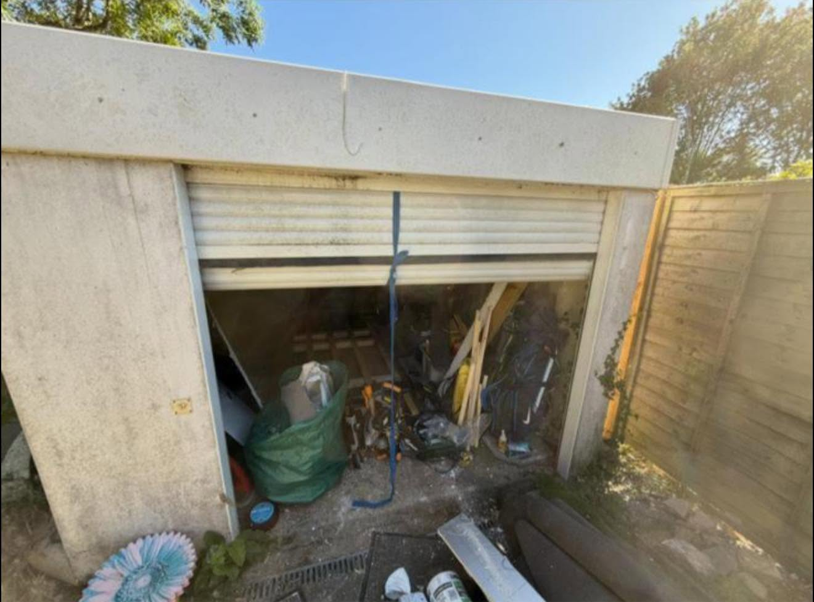
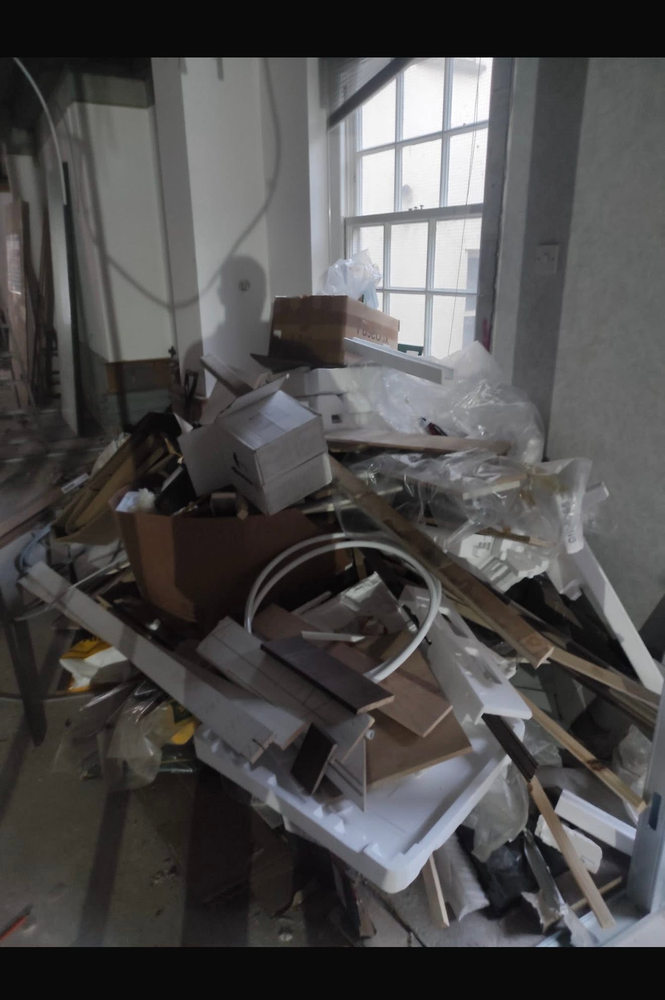

- Home
- Services
Clearance for every kind of job
Whether it is a single bulky item, a full house, a building site or weekly business collections, one call sorts it.
- Licensed and insured
- Same-day often available
- Best price guaranteed

Residential
Rubbish removal, house, bereavement, loft, shed, garage and garden clearances.
Residential clearance
Building waste
A cheaper, faster alternative to skips and permits for builders and developers.
Building waste
Local business
Weekly collections, office, kitchen and end of tenancy clearances around your hours.
Business waste
Large enterprise
Fleet and manpower for large businesses, schools and local authorities.
Enterprise servicesIf it needs to go, we can take it
Not sure about something? Send a photo and ask.
- General household rubbish
- Furniture and bulky items
- White goods
- Garden and green waste
- Wood and timber
- Metals
- Plasterboard
- Hardcore and rubble
- Soil
- Plastic and cardboard
- Office furniture and equipment
- Food and kitchen waste
Three steps. Usually one day.
- 1
Send photos
Use the quote form or call us and show us what needs to go.
- 2
Get your price
We come back quickly with a clear price. No hidden extras.
- 3
We clear it
We load, sweep up and take it all away to be sorted and recycled.
Common questions
Are you licensed and insured?
Yes. We hold the Upper Tier Waste Carrier Licence with the Environment Agency (CBDU401377) and are fully insured for every job.
Where does my waste go?
Everything is sorted after collection. 97% is diverted from landfill and 100% of reusable items are recycled or passed on.
How quickly can you come?
We aim to clear the same day wherever possible. Call us and we will tell you our earliest slot.
Do I need a skip or a permit?
No. We load the waste straight into our vehicles and take it away, so there is nothing left on the road and no permit to arrange.
Can I get a waste transfer note?
Yes. We provide waste transfer notes on request for every collection.